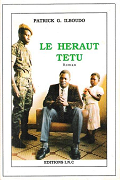
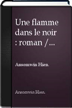
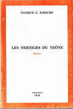
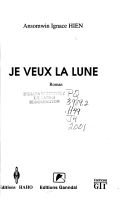
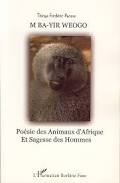
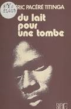
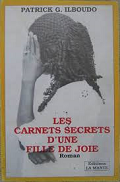
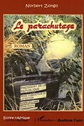
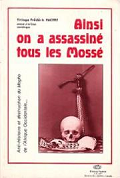

Acceuil
Historique
Auteurs
Romancier
Poètes
Nouvelliste et essayistes
Livres
Romans
Reccueil de poèmes
Nouvelles et essais
Maison d'éditions
Ouagadougou
Bobo-Dioulasso
Voici une liste des principaux romans littéraires du Burkina Faso.
L'enfer au paradis de Ignace HIEN
Ecrit en 1988
Crépuscule des temps anciens de Nazi BONI
Ce roman est le premier roman littéraire burkinabé écrit par un burkinabè. Il traite de la vie quotidienne, et des coutumes dans le Bwamu traditionnel. Etant donc le premier roman burkinabè il a tout le mérite donc de devoir être lu par tous les natifs du pays!
Ecrit en 1962
Le héraut têtu de Patrick ILBOUDO
Ecrit en 1992

Une flamme de Ignace HIEN
Ecrit en 2007

Langages des tam-tams et des masques en Afrique de Frédéric Titinga PACERE
La bendrologie, science du langage des tam-tams et des masques, prend son origine à travers cette oeuvre d'une grande beauté littéraire.
Ecrit en 1991
Les vertiges du trône de Patrick ILBOUDO
Ecrit en 1990

Je veux la lune de Ignace HIEN
Ecrit en 2001

Mba Yir Weogo de Frédéric Titinga PACERE
Ecrit en 2007

Du lait pour une tombe de Frédéric Titinga PACERE
Ecrit en 1984

Les carnets secrets d'une fille de joie de Patrick ILBOUDO

Le parachutage de Norbert ZONGO

Ainsi on a assassiné tous les mossés de Frédéric Titinga PACERE
En 1954, sur son lit de mort, un des derniers rois d'Afrique traditionnelle laissait pour seul message à son fils encore mineur : "On a assassiné tous les Mosse". Une vingtaine d'années plus tard, le même fils aboutit aux mêmes conclusions que le père : "Ainsi on a assassiné tous les Mosse". Mais au-delà de cette relation émouvante, d'une rare apreté certes, ce sont plusieurs bastions de nos concepts modernes qui s'écroulent ou qui sont remis en question : c'est le cas de notre concept de 'HISTOIR ; de même nos aménagements du pouvoir. Il faudra désormais admettre l'EXCENTRALISATION qui a fondé une stabilité du Pouvoir pratiquement nulle part égalée.

Les livres les plus populaires